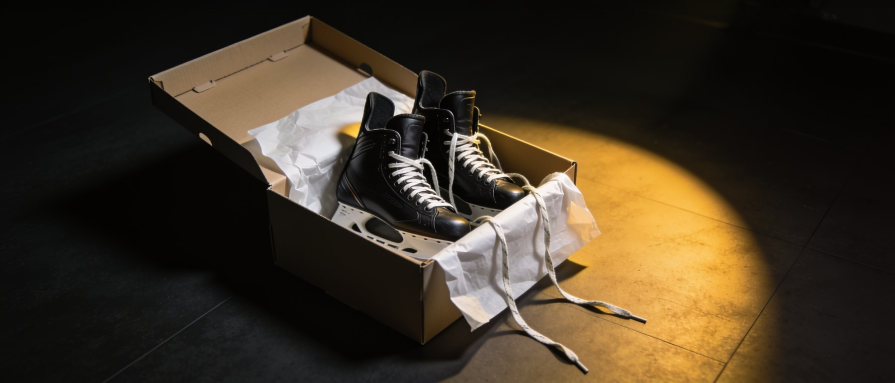

Sign up to playYour Discord account is your login. Register by the sign-up cutoff and you’re in the draft.
Sign in once with Discord and you have a league account. Then three boxes — join the server, add your EA ID, register — put you in the player pool, and your dashboard tracks all three.

Sign in with Discord
Your Discord account is your league account. One sign-in creates it — there is no separate password to make.
Press Join with Discord
From any page, hit Join with Discord in the top bar, or the big Sign in with Discord button on the sign-in page. For a new member this is also how you sign up.
If Discord shows “You need a verified e-mail or phone number,” that is Discord, not the league — verify your email in Discord’s settings. No phone is needed.
You come back signed in
Authorize once and Discord returns you to the page you left. The top bar swaps the Discord button for your search, bell and avatar, and the sign-in page now reads “You’re signed in.”
 1
1
 2
2The three-box checklist
Your dashboard opens on a card called Get set up. Clear all three rows and you are in the player pool.
Open My Hub
Use My Hub in the top bar. As a brand-new member you land on the onboarding dashboard, where the Get set up card reads 0 of 3 done: In the league Discord, EA ID on file, Registered for the season.
Join the league Discord
Press Join the Discord and join the server with the same Discord account you signed in with. Game nights, codes and rulings all run there.
Leave the server before you are placed on a club and your sign-up is withdrawn after about a day. Rule 1.1
Add your EA ID
Add EA ID opens a dialog. Type the exact name you use in-game and press Save EA ID — you get “EA ID saved” and the row ticks. Staff see it for lobby verification; it stays off the public directory unless you opt in.
 34
34 5
5Register — the last box
One form puts you in the player pool. Register by the sign-up cutoff — 11:59 PM ET on the Thursday before the draft — and you are in the draft; after it, you are placed on a club as depth automatically.
Open the register page
Register to play takes you there — but the form stays locked until you are in the Discord and have an EA ID on file. Until then it shows Join the server and a red “You need your EA ID on file to register.”
Pick a position, then submit
Choose your primary position — Center, Left Wing, Right Wing, Left Defense, Right Defense or Goaltender — add a note for the league office if you want, then press Submit registration.
 6
6 78
78You’re registered
A toast reads “You’re registered for Season 1!”, the card becomes Update registration with a Registered chip, and Register disappears from the top bar. From here the season is short and simple: the sign-up cutoff on Thursday night, draft night on Saturday, then puck drop the Wednesday after — no pre-season and no free-agency week. Register in time and you are in the draft; miss it and you still play — you are placed on a club as depth once the draft concludes. Rule 2.8 Changed your mind while the window is open? Use Withdraw my sign-up.

 8
8Find your way around
Your profile lives in Settings, the bell carries every alert, and the sidebar is your map.
Finish your profile in Settings
Settings holds your League profile — EA ID, Platform (PS5, XSX or PC) and Save profile. Your display name is read-only; it follows your Discord name within minutes. The Discord account card shows In the server or lets you Link a different Discord account.
Watch the bell
The bell carries game codes, lineups, rulings and deadlines. Unread alerts are highlighted; Mark all as read clears them, and Sound on chimes new ones.
 9
9 10
10Learn your sidebar
Every member gets a My Hub group — Dashboard, Availability, Action Center, Notifications, Settings. Once you are on a roster, Lineups joins the group and your avatar menu adds My player profile.
Run a club? Team HQ appears
Owners, GMs and AGMs get a second Team HQ group below the personal one — Management, Roster, Schedule, Lineup builder, Trade Hub and more. Ordinary members never see it.
 11
11 12
12